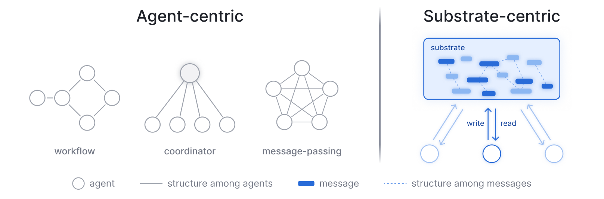
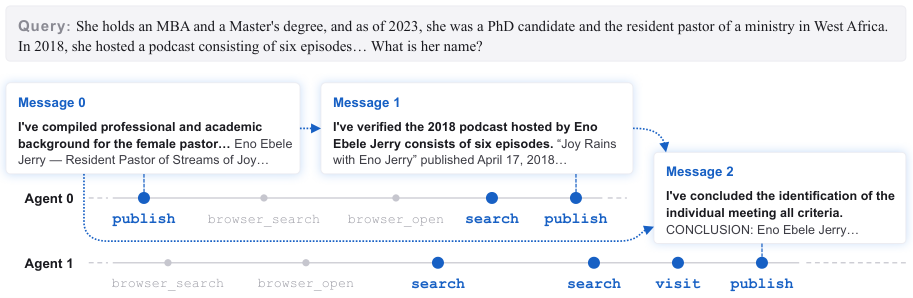

Uses the FATE-M and FATE-H Lean 4/Mathlib abstract-algebra benchmarks as one of four tasks, with agents searching Mathlib and compiling proofs.
Abstract
Existing large language model (LLM) based multi-agent systems have been shown to scale poorly, and we identify three problems: reading burden that grows with the group, useful information diluted by shared work of unknown quality, and fragility to failed agents. We argue that the problems are largely due to agent-centric designs: the coordination structure is wired into fixed workflows, central coordinators, or peer-to-peer messaging, and recent blackboard-style methods that move the coordination into a shared medium relieve only the last problem. To close the gaps, we build ScaleMAS, where asynchronous agents interact with a shared datastore of linked messages via three operations: publishing messages with optional references to earlier ones that they build on, searching for messages by content, and visiting messages by address. Search returns at most $k$ messages, so an agent's read stays bounded at any group size; results are ranked by relevance and by how often they are cited, which we find to be an effective proxy for quality; and messages persist after their producers leave, so the group carries on when individual agents fail. Across four agentic tasks, ScaleMAS outperforms agent-centric and blackboard-style baselines at lower inference compute, continues to scale up to 128 agents, and tolerates losing agents midway.
Problem
LLM-based multi-agent systems scale poorly. Three problems grow with group size: each agent's reading burden, dilution of useful shared work whose quality is unknown, and fragility when agents fail. These stem from agent-centric coordination designs.
Approach
ScaleMAS is a substrate-centric system in which asynchronous agents interact only through an append-only datastore of linked messages. Agents use three operations: publish messages with references to earlier ones, search by content, and visit by address. Search returns at most k messages, ranked by relevance and by citation weight. One evaluation task is Lean 4 theorem proving on FATE, where agents use a Mathlib search tool and a Lean compiler check, and final proofs must compile without sorry.

Figure 2 : Two design principles for multi-agent coordination. Left: agent-centric designs wire coordination structure into the agents. A workflow-based system fixes agents’ successors, a coordinator-based system routes results through one main agent, and a message-passing system lets agents address others. Right: substrate-centric designs place the coordination in a shared medium. Messages are pu

Figure 3 : A minimal example of two agents working through the substrate on a deep research query. Each row is one agent’s trajectory, with the three operations in blue and the task’s own tools in gray. A dashed stem marks the step that published a message, and a dotted arrow points from a referenced message to the message that cites it.
Results
Across four agentic tasks (BrowseComp-Plus, FATE, SWE-bench Verified, and a new Contradiction Audit benchmark), ScaleMAS outperforms agent-centric and blackboard-style baselines at lower inference compute. It continues to scale up to 128 agents and tolerates agents failing midway.